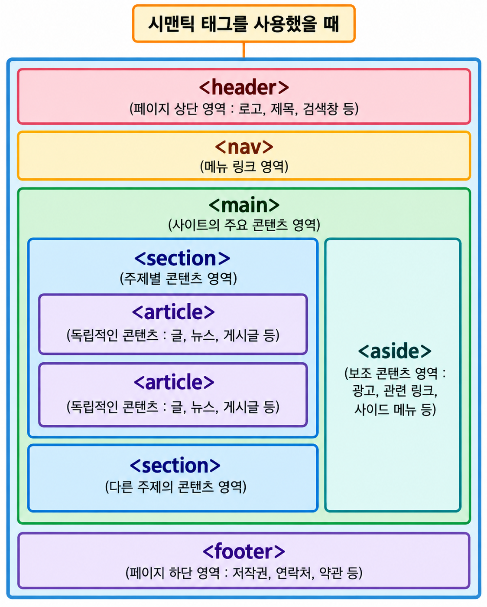

03-4. 문서 구조 의미 꼬리표
- 목차
- 본문
- 왜 필요?
- 검색자
- 화면 낭독기
- 주요
- 머리
- 머리자
- 꼭 왼
- 검색창, 메뉴
- 항해
- 항해
- 연결
- 영역 자유
- 핵심 내용
- 주
- 한 번만 사용
- 독립 내용
- 기사
- 블로그 포스트, 뉴스 기사
- 여러 사용
- 안에 절개 가능
- 내용 영역
- 절개
- 내용 묶음
- 측
- 제쳐
- 왼, 오, 바
- 발
- 발자
- 제작 정보, 저작권 정보, 연락처
- 다른 의미 꼬리표 사용 가능
- 부호 묶음
- 분할
- 주석
- 컨 + 물
- !--내용--
- 실제
